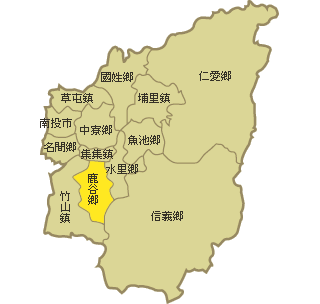

鹿谷鄉簡介
鹿谷鄉位於臺灣南投縣西南部，北鄰集集鎮、東鄰信義鄉、水里鄉、西南鄰竹山鎮，行政中心位於鹿谷村。鹿谷地區古稱羌仔寮，後於日治1920年改名「鹿谷」。

圖片來源：http://localdoc.ncl.edu.tw/tmld/browse_map.jsp?map=1007
鹿谷的歷史
鹿谷的氣候與文化
鹿谷的特產
凍頂茶是由林鳳池先生於1855年自福建省帶回之軟枝烏龍，由林三顯先生於凍頂山栽植成功後繁殖成園，現今遍植全鄉。
凡到過鹿谷各風景區的人，一定都有印象，當開車經過鹿谷鄉門戶——初鄉，只要有路的地方，沿路走去就會發現茶園阡陌，聞到茶香四溢。
鹿谷鄉氣候溫和，丘陵地形，全鄉年平均溫度23℃，是最適合種茶的地方，再加上雨量豐沛，常年雲霧籠罩，因此茶樹生長特別良好；
此外，製茶及烘焙技術的精進，分級包裝確實，信用可靠，讓鹿谷鄉的茶葉成為各地愛好品茗者的搶手貨。
凍頂烏龍茶至今仍保留手工製作的風格，品種以青心烏龍茶為主，其製作過程發酵較深，水色呈橙黃，有明顯烘焙後之明亮感。
茶香清香撲鼻，入口生津富活性，落喉甘潤且有回甘之感覺。更有耐泡、耐貯存、香沉、味醇之特色。
凍頂烏龍茶採分級包裝，由茶葉專家評審分級，分為特等、頭等、二等、三等、三朵梅花、二朵梅花等不同等級。
分級包裝的作用是便於消費者採購，且是品質的保證。
2.鱒魚
鱒魚有魚類至尊之美稱，適合生長在18℃以下，不受污染的中性水質中，且水源需充沛，所以早在民國59年即有人在北勢溪和雅谷養殖。
鱒魚魚體無污染，營養價值高，骨頭少，肉中無刺，肉質鮮嫩無異味。目前餐廳均以蒸、煮、烤、薰等方式來料理，是喜愛美食者到鹿谷遊覽時，餐桌上不可或缺的佳餚。